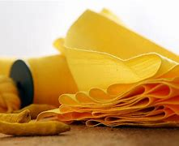

TYPES OF COTTAGE INDUSTRIES IN INDIA
Silk Weaving

Weaving refers to the process of interlacing yarn to produce textiles and fabrics. The vertical thread is called the warp, while the horizontal thread is referred to as the weft. Warp and weft are usually laced in fixed patterns using a loom. The different ways of lacing results in varied types of weaves. A simple criss-crossing of the warp and the weft at right angles is called plain-weave. In twill-weave, the warp and weft are laced together to form a typical diagonal pattern, while four or more warp yarns are floated over the weft in the satin-weave technique. In India artisans from different places have their unique styles of weaving plain and dyed yarns, leading to a range of distinguished textiles and fabrics.
Poultry
Poultry India, an international exhibition for the poultry industry just concluded the 13th Edition of the show in the City of Hyderabad, India. The Exhibition features the most innovative and reputed companies across the continent from the poultry sector to showcase their businesses and interact with potential partners, clients and investors. This event provides valuable information about poultry industry, poultry feeds, poultry equipments, technology, chicken breeders, Egg farming, poultry nutrition, animal health and international poultry production. It also offers latest advances in poultry research, science and technology like cages and feed milling importance. It provides advanced knowledge and understanding of poultry industry via scientific forums, trainings and career opportunities in the Poultry Industry.Poultry India exhibition has reached a pinnacle where it is a one-stop forum for the Indian Poultry industry to experience 'live' display of the products and services to the right decision makers of international companies and reach to a wide global market.
Hand made Jewelry

The one big advantage of handcrafted jewelry is that the customer gets to sit with the jeweler to decide upon the design and pattern of the jewelry. The process is a tedious one as it involves a lot of planning and finalizing on the designs and deciding on whether stones should be embedded or not. Handmade Jewelry includes bangles, bracelets, necklaces, chocker sets, earrings, etc. There are different types of handmade jewelry available. The art of making Kundan jewelry is one of the oldest forms of handmade jewelry. The art is also known as “Kundankari”. Here the jewels are made from 24 carat gold, embedded with stones on one side and minakari work on the reverse side to get beautiful surfaces on both the sides. Both gold and silver is used for this work.Handmade ivory jewelry is exquisite to behold. Such jewelry is crafted from the tusks of animals like elephants, hippopotamuses, walruses, etc.
Khadi

Khadi is a cloth woven using hand-operated loom with hand-spun yarn. The three varieties of Khadi are cotton, silk and wool. In 1925, Mahatma Gandhi established the first association of Khadi producers. In post independent India, the government of India at the federal level, and the provincial governments at the State level, set up promotional government bodies under the banner of Khadi & Village Industries Commission and Khadi & Village Industries Board respectively. One major concern of developing countries was, and still is, the generation of adequate employment opportunities and utilization of physical and human resource to the maximum advantage, particularly in rural areas where the majority of the population lives. This concern of India was reflected in the symbol of “charkha”, the spinning wheel which, next to agriculture is the most important source of income in rural India. Under the patronage of the Commission and Board, Khadi, this was hitherto a household, disorganized activity, and gradually evolved into a vibrant sector.
Pickel Making
Pickle-making has become a cottage industry in Atreyapuram, Narkidimilli, Ryali and Ankampalem. Especially in Narkidimilli, people of the entire village are busy running the cottage industry. The moment one enters the village, aroma of pickles wafts through the air. The condition is more or less the same in any street of the village. We come across pickles stored in barrels. All women are involved in the preparation activity.They prepare the pickles mixing all ingredients in drums and stored as it is for a month. Afterwards, the pickle is transferred to another container and sold to customers. Special pickle is sold at Rs 60 a kg, while the ordinary variety at Rs 35 to 40 a kg. People of the village earn livelihood for about eight months in a year. Pickle-makers of these villages need at least 1000 tonnes of mangoes in the peak season. Manufacturers of pickle lament that there is no support from government for their trade though they have involved in this occupation for decades. In Atreyapuram, sugar-coated waffers (putarekulu) business have been overtaken by pickle industry.
Pottery
Pottery being an age old handicraft in India, the roots of the India pottery industry can be traced back to the earliest times of civilization. The beginning of pottery making trails back to the Neolithic era. During the time of the Indus Valley Civilization, this effective art form improved with technology. In the present day, the pottery industry in India has been put forward as a major cottage industry as well as on the contemporary lines in both small and big pottery concerns. The pottery industry in India provides mass employment along with betterment of the living standards; both the village and city people comprise the work force of the industry. Moreover, this industry is known to play a vital role in the total GDP of India and even in the foreign revenue.
Bamboo Basket
Baskets of conical shapes are invariably used for carrying purposes. They are commonly found among the Daflas, Hill-Miris, Tagins, Gallongs, Noctes and Wanchos. There are sufficient reasons to show that here is definite relationship between the topography and the conical shape of these baskets. The Dafla carrying basket, which is locally known as ege, may be regarded as one of the perfectly suited basket from technical point of view, as far as adaptation to the topography is concerned. Dafla villages are situated in the high spurs of mountain ranges. Their jhum fields, water sources and game reserves are located far away beyond the village limits. As a result, they have to carry their loads such as paddy, firewood, water tubes, etc., on their backs and climb high up the mountain. In this process with the basket on the back while climbing up, the carrier naturally has to bend in such a way as to form a 120-degree angle from the horizontal. Another feature of this Dafla basket is that it is more advantageous for carrying things. The portion of the wall of the basket that rests upon the back of the carrier is almost flat and straight and the portion just opposite to it bulges outward. The flat portion is slightly flexible to rest comfortably on the back.
Leather
A study that explores the livelihoods of the traditional tanners was conducted from November 2013 to April 2014 with the objective of assessing the prevailing traditional leather production and processing knowledge, business environment in Amhara regional state of Ethiopia. In-depth interviews were carried out through direct observation, focal group discussion using a semi-structured questionnaire by interviewing 30 households located in 3 zones of Amhara region and those who work on traditional tanning. The result indicated traditional leather products are important household materials and income generating business especially for the rural community. To produce traditional leather products, they follow different steps and procedures and to facilitate this process in between, they apply different materials and indigenous vegetables. The involvement of traditional tanners in the market is significant that the volume of raw cattle hide they absorb for producing traditional leather goods is more than 600,000 per annum. All the local tanners who work through the process were made up of young and middle-aged men. By tradition, local tanners in Ethiopia belong to a low-caster and are looked down upon by other parts of the community.
Dairy Farming

India has been the leading producer and consumer of dairy products worldwide since 1998 with a sustained growth in the availability of milk and milk products. Dairy activities form an essential part of the rural Indian economy, serving as an important source of employment and income. India also has the largest bovine population in the world. However, the milk production per animal is significantly low as compared to the other major dairy producers. Moreover, nearly all of the dairy produce in India is consumed domestically, with the majority of it being sold as fluid milk. On account of this, the Indian dairy industry holds tremendous potential for value-addition and overall development.
Toy Making

The invention of toys in India took place during the Indus Valley Civilization, approximately 8,000 years ago. The original toys comprised whistle-shaped parrots, toy monkeys with long hands to slide down a rope or stick and miniature farm carts. All these toys were made from natural materials such as bamboo sticks, hay, and natural clay like soil, rocks, and fibre cloth. However, today, the advent of progressive technology and mechanism has stimulated companies to produce fresh and inventive toys. Soon, owing to the new revolution of ‘Local se Vocal’, India is anticipated to become the global hub by 2025-2030. The Indian toy sector is expanding on the shoulder of a growing young population, rising disposable incomes, and a slew of innovations for the junior population base.
Conclusion
The launch of “Make in India” is showing some positive results because, after the launch of the plan, India received investment commitments worth US$250 billion and investment inquiries worth US$23 billion between September 2014 to February 2016. Budget Allocation for Make in India in Union Budget 2020-21 : The total allocation for the Make in India programme was Rs 651.58 crore in 2019-20. In the Union Budget 2020-21, total allocation for the same increased to Rs 1,281.97 crore. In conclusion, it can be said that Make in India is a good initiative by the government of India and it can convert India from an importing economy into an exporting economy.